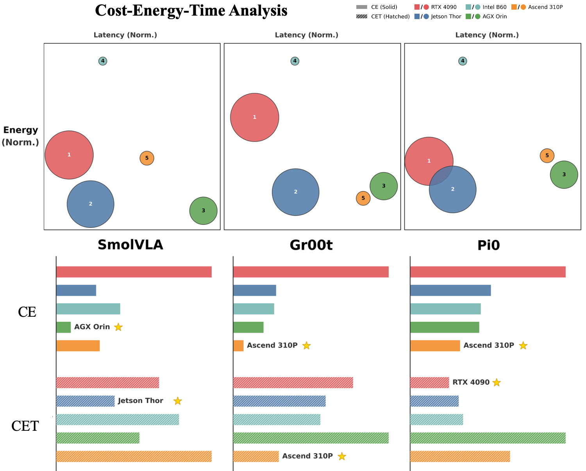
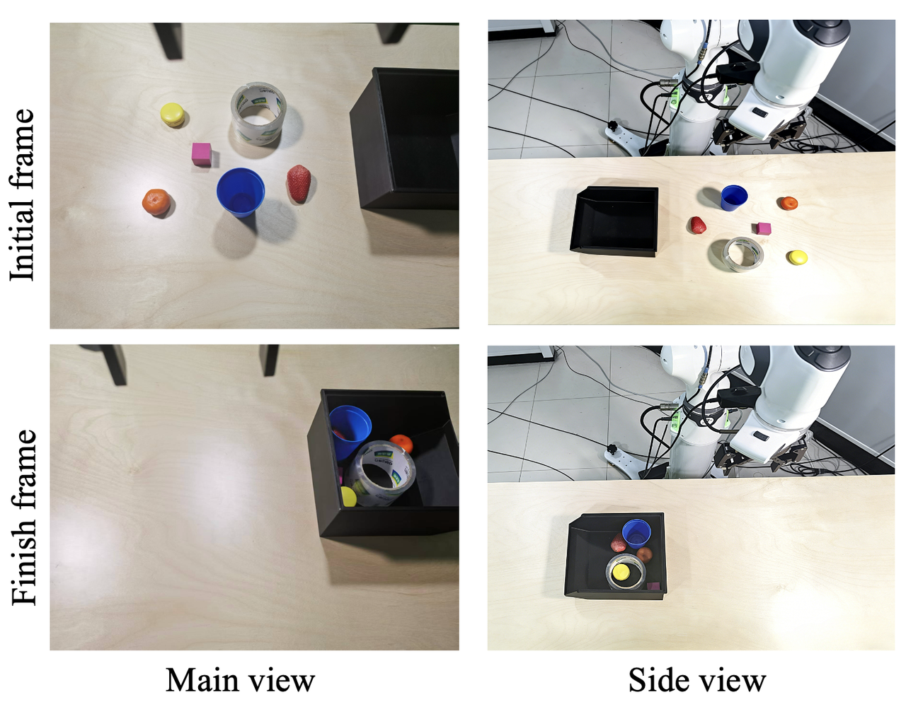
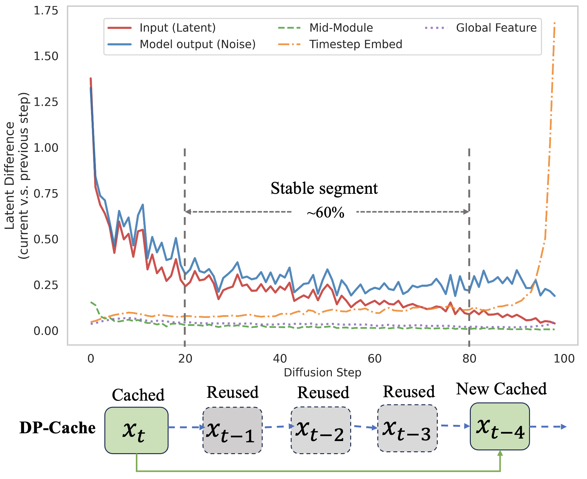
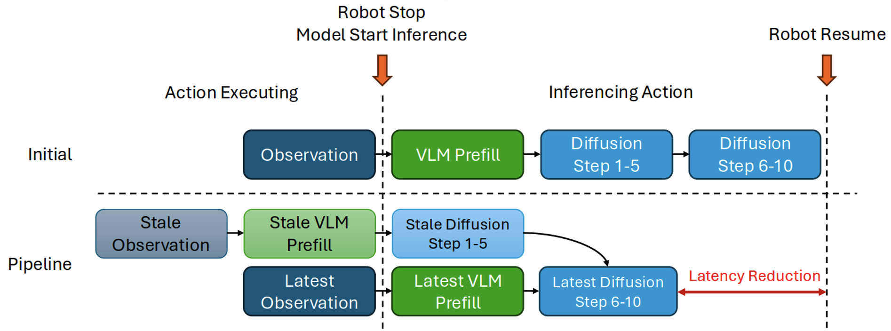
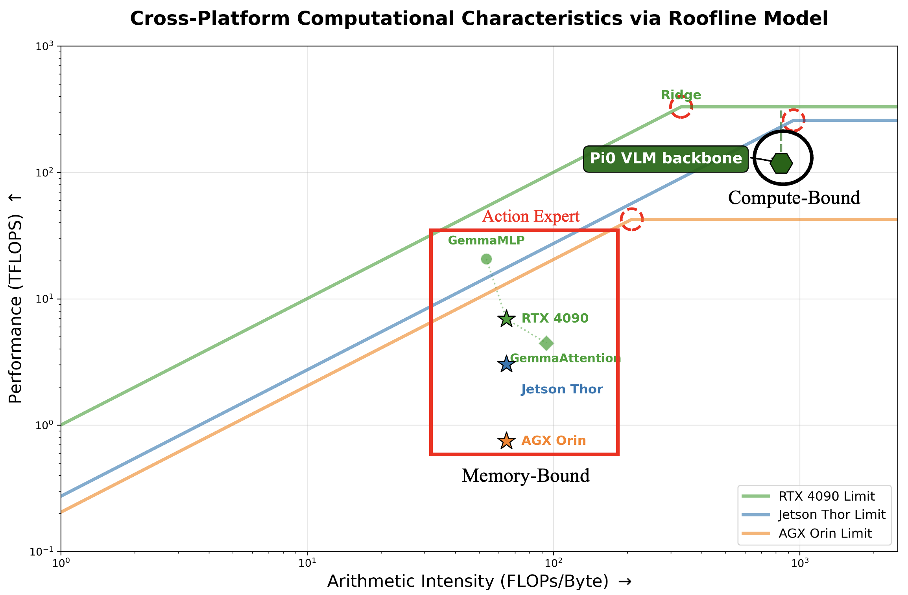
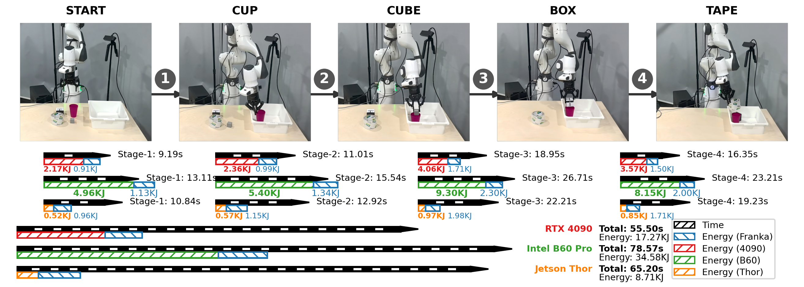
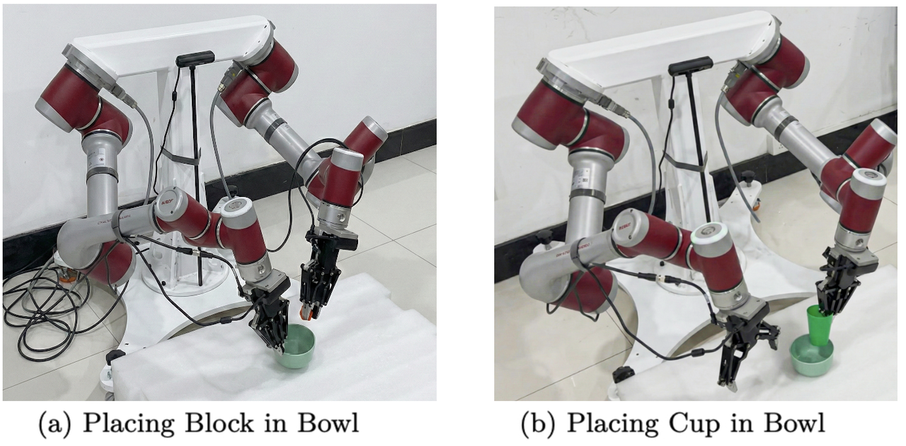
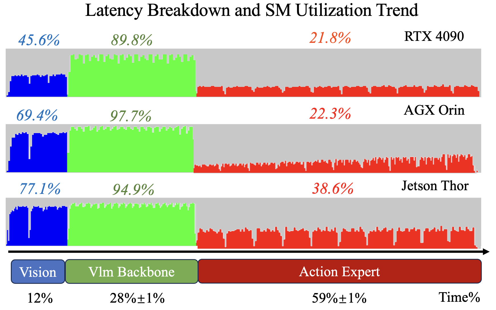
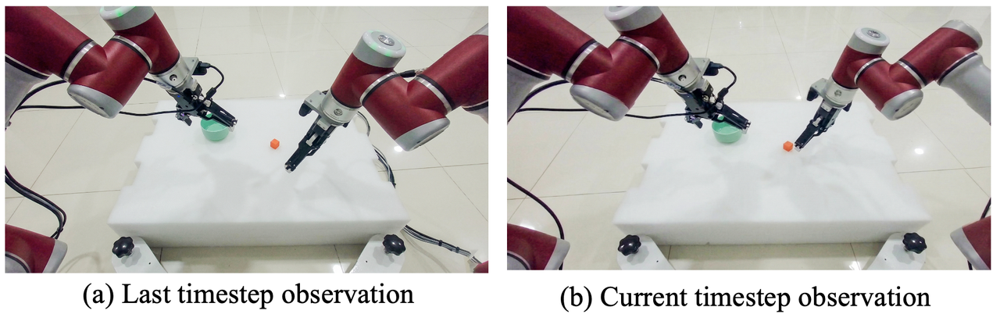

Model size is not latency
Smaller policies can be slower when iterative diffusion dominates the control loop. Feasibility must be measured end to end.
Constraints and acceleration for low-cost, energy-aware, real-time on-robot deployment.

We study VLA deployment as a model-hardware co-design problem: the right platform depends on latency feasibility, acquisition cost, energy budget, memory capacity, and the structure of the model pipeline.
The evaluation explains why peak FLOPS alone is a weak deployment guide for embodied VLA workloads.
Smaller policies can be slower when iterative diffusion dominates the control loop. Feasibility must be measured end to end.
After latency screening, cost and energy can favor edge accelerators over flagship desktop GPUs for specific robot settings.
The VLM backbone is compute-bound, while the Action Expert is memory-bound and serial, causing phase-dependent underutilization.
Representative figures and robot deployment visuals from the paper assets.


The optimizations target the two serialization points observed in VLA inference: repeated denoising inside the Action Expert and synchronous VLM-to-Action-Expert execution.
Offline profiling identifies stable diffusion segments, then cached intermediate results bypass redundant computation during inference.
Early denoising uses stale but temporally coherent visual features while the VLM processes the current observation.
torch.compile and Ascend ATC reduce framework overhead and fuse operations, with platform-dependent gains.



Robot task visuals and execution traces for on-robot VLA deployment.




Select a model and rank feasible hardware by latency, cost, energy, or CET-style deployment metrics.
| Hardware | Capability | Memory GB | Cost USD | Latency ms | Energy J | CT | CE | CET |
|---|
CT = cost x time. CE = cost x latency. CET = cost x energy x time. Lower values indicate better deployment efficiency under the selected metric.
Use the official proceedings BibTeX when available. This placeholder follows the arXiv record.
@misc{zhou2026vlaxpu,
title={Characterizing Vision-Language-Action Models across XPUs: Constraints and Acceleration for On-Robot Deployment},
author={Zhou, Kaijun and Chen, Qiwei and Peng, Da and Li, Zhiyang and Li, Xijun and Gu, Jinyu},
year={2026},
eprint={2604.24447},
archivePrefix={arXiv},
primaryClass={cs.RO}
}